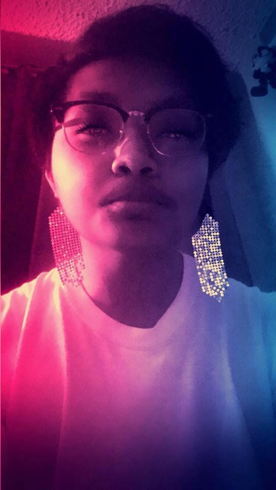
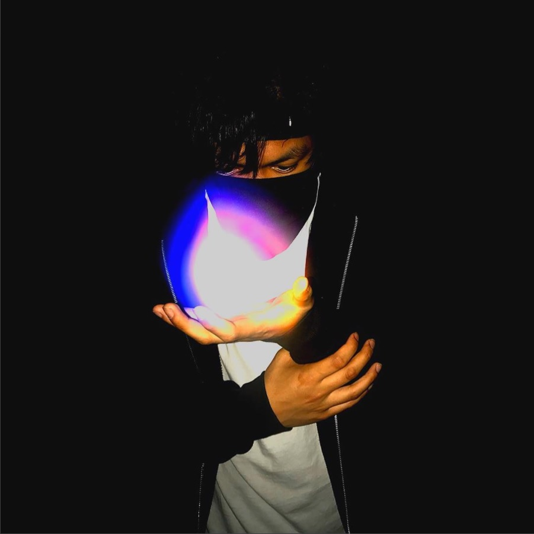

Who am I?
I'm Ronald Contreras Mina, but I often go by "Ron". Yes, half my first name! I'm currently an SJSU student majoring in Digital Media Art. My style of art is drawing/sketching things out of pencils and sometimes using ink pens to trace over them. I usually like doing drawings of cartoon and anime characters, and also drawing words/names in graffiti. At times, I also like to use Adobe software programs like Illustrator and Photoshop. I also have interests in taking great pictures on my phone and camera. I wouldn't call myself a master at photography, but I do have interests in that as well. Of course, I love editing pictures, and one of my most favorite effects in editing pictures are black and white. In my free time, I like to surf the internet, play videogames, and of course, hang out with friends! That's about it, and welcome to my Art 74: Intro to Digital Media handcoded portfolio website!


Back to homepage!